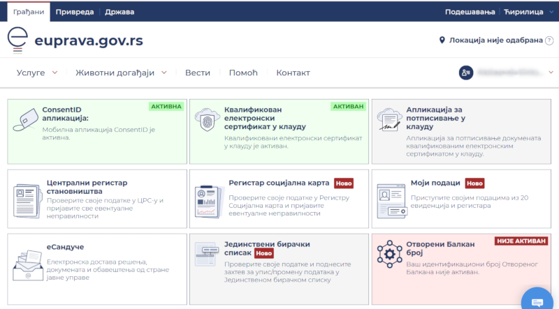

HomeIndex
HomeIndex
еУправа
The link "Find out more" works only for the "Login with a username and password", go there and see the following sections in the sidebar: "Sign-in with username and password", "Sign-in with the ConsentID mobile application", "Sign-in with a qualified electronic certificate".
Also see:
JMBG (JМБГ, Јединствени Матични Број Грађана) — Unique Registration Number of Citizens — a personal identification number that is assigned to all citizens (and residents) of Serbia.
The JMBG consists of 13 digits in form:
DDMMGGGRRBBBK,
where the fragments are:
| Code | Meaning |
|---|---|
DD |
the birth day |
MM |
the month of birth |
GGG |
the last three digits of the year of birth |
RR |
the region of birth or residence |
BBB |
the unique number |
K |
the control number |
The region of birth or residence (RR):
Unique number (BBB):
The control number (K) is the single-digit number. To calculate it, we write the JMBG in the form A1A2A3A4A5A6A7A8A9A10A11A12A13 and calculate the sum S:
S = 7A1 + 6A2 + 5A3 + 4A4 + 3A5 + 2A6 + 7A7 + 6A8 + 5A9 + 4A10 + 3A11 + 2A12
Then the control number K is obtained according to the formula:
m = S mod 11, i.e. the figure m is equal to the remainder of division the number S by 11. Then we use the following rules:
These versions look equivalent.
Note! Looks like now the algorithm is different: if 1 <= m <= 9 (not L) then K = m.
Example. Assume the first 12 digits are 170300165123, then:
| Position | JMBG digit | Factor | Product |
|---|---|---|---|
| 1 | 1 | 7 | 7 |
| 2 | 7 | 6 | 42 |
| 3 | 0 | 5 | 0 |
| 4 | 3 | 4 | 12 |
| 5 | 0 | 3 | 0 |
| 6 | 0 | 2 | 0 |
| 7 | 1 | 7 | 7 |
| 8 | 6 | 6 | 36 |
| 9 | 5 | 5 | 25 |
| 10 | 1 | 4 | 4 |
| 11 | 2 | 3 | 6 |
| 12 | 3 | 2 | 6 |
| Sum S | 145 | ||
| S mod 11 | 2 |
So the control number K must be 2.
ConsentID is probably the only identification artifact that needs to be obtained personally offline.
See the aforementioned "Sign-in with the ConsentID mobile application" section. There's a link to the mobile application that should be installed. There are also links to the elaborate instructions (in PDF) about how to setup the application and to register the obtained ConsentID (using QR-code scanning or manual number typing in).
Find the link to the list of the locations (post offices and organizations of some other kinds) where the ConsentID may be obtained. Glavna pošta (Central Post Office of Serbia, Takovska 2, Beograd 11101, 44.81059564600551, 20.466953094499388) was used and it worked pretty well. Lična karta was required. The ConsentID is just a sheet of paper (A4) with a QR-code that should be scanned by the mobile application. It's probably good to try it right away to avoid additional visits in case of problems. So the application should be installed and adjusted (the PIN code is defined) before the visit.
This is the place where the residence questions may be managed and tracked starting from residence application.

еСандуче is the mailbox where notifications may be received, particularly about the residence application state.
еПисарница may probably be used for requesting services and asking questions (wasn't tried yet).